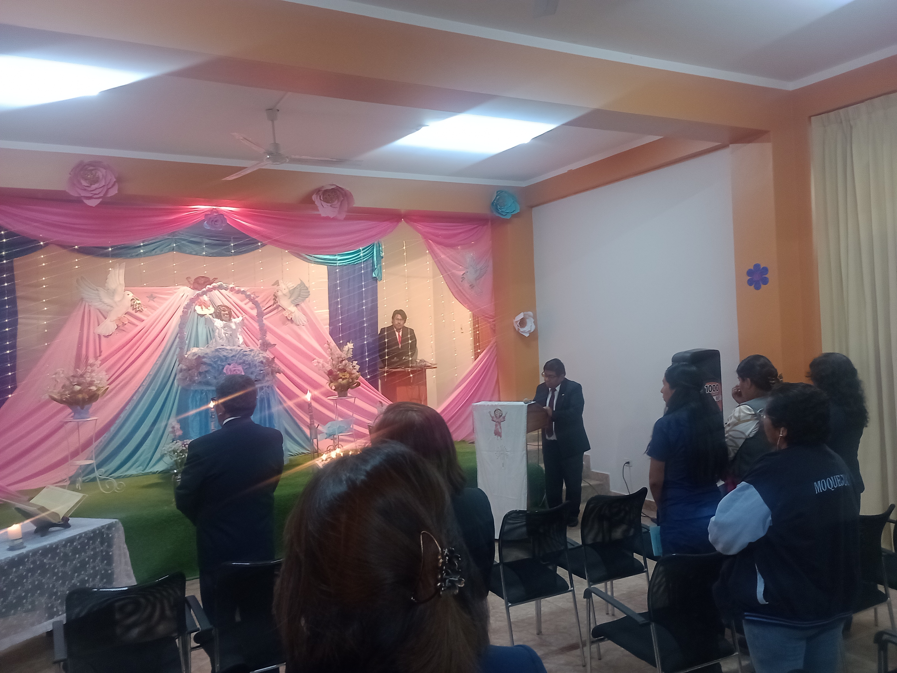

Una novena al Divino Niño Jesús generalmente se compone de varios elementos que se repiten durante nueve días consecutivos. Aquí te detallo las partes comunes de una novena al Divino Niño:
Proyecto Virtual